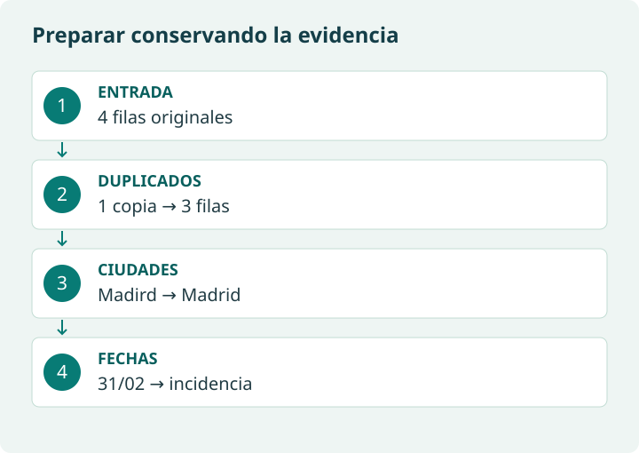

Primero diagnosticar, después decidir
Conserva la tabla original. Revisa dimensiones, nombres de columnas, tipos, valores ausentes, categorías y duplicados. No borres filas solo porque parecen extrañas: una edad desconocida es distinta de una edad imposible, y ambas son distintas de un cero válido en otra variable.
import pandas as pd
from io import StringIO
bruto = pd.read_csv(StringIO("""id,nombre,edad,ciudad,fecha_registro
1,Ana,35,Madird,01/02/2024
2,Luis,, Madrid ,2024-02-02
2,Luis,, Madrid ,2024-02-02
3,Eva,42,Santander,31/02/2024
"""))
print(bruto.shape)
print(bruto.dtypes)
print(bruto.isna().sum())
print("Duplicados completos:", bruto.duplicated().sum())Se esperan cuatro filas, una copia completa repetida y dos edades ausentes, porque la fila de Luis aparece dos veces. Ese diagnóstico inicial difiere del número de ausentes tras quitar la copia. Conserva ambos recuentos.

Duplicados, claves y correcciones justificadas
drop_duplicates() compara todas las columnas por defecto. Repetir un identificador con campos distintos es un conflicto que exige una regla: no equivale a una copia exacta. Repetir un nombre tampoco demuestra que sea la misma persona.
limpio = bruto.drop_duplicates().copy()
conflictos = limpio[limpio.duplicated("id", keep=False)]
print("Conflictos por id:", len(conflictos))
limpio["ciudad"] = limpio["ciudad"].str.strip().replace({"Madird": "Madrid"})
print(limpio[["id", "ciudad"]])La salida tiene tres filas y cero conflictos por id. strip() retira espacios exteriores, pero no corrige erratas. El diccionario de sustituciones aplica una regla documentada; no debemos convertir cualquier palabra parecida en Madrid. Si falta evidencia, marca el caso para revisión.
| Situación | Decisión posible | Justificación necesaria |
|---|---|---|
| Edad ausente | Conservarla como ausente | No inventar la edad de una persona. |
| Registro copiado completamente | Retirar una copia | La unidad de registro no admite copias idénticas. |
| Dos versiones del mismo id | Separar para revisión | Determinar cuál es válida usando fecha o fuente fiable. |
| Categoría con errata conocida | Sustituir con diccionario | Guardar la correspondencia aplicada. |
¿Rellenar todas las edades ausentes con la media resuelve el problema?
No necesariamente. Imputar altera la distribución y puede cambiar quién supera el filtro. Si se decide imputar en otro contexto, hay que justificar el método, conservar una marca de imputación y evaluar su efecto.
Fechas: interpretar y presentar son pasos distintos
«01/02/2024» es ambiguo sin una convención. Para este ejemplo declaramos día/mes/año en las fechas con barras y año-mes-día en las fechas ISO. Conservamos el texto original. No atribuimos a dayfirst=True la capacidad de resolver la intención del autor.
texto = limpio["fecha_registro"].astype("string").str.strip()
fechas = pd.to_datetime(texto, format="%d/%m/%Y", errors="coerce")
iso = texto.str.fullmatch(r"\d{4}-\d{2}-\d{2}", na=False)
fechas.loc[iso] = pd.to_datetime(texto.loc[iso], format="%Y-%m-%d", errors="coerce")
limpio["fecha"] = fechas
incidencias = limpio.loc[texto.notna() & fechas.isna(), ["id", "fecha_registro"]]
print(incidencias)
print(limpio["fecha"].dt.strftime("%d/%m/%Y"))El 31 de febrero no existe y queda como NaT; el registro 3 debe figurar en incidencias. strftime produce texto para presentación: conserva fecha como fecha para ordenar y calcular. En la actividad original, inspecciona los formatos reales antes de ampliar las reglas; un año de dos cifras necesita una convención de siglo explícita.
Consulta: pandas: conversión de fechas.
Aquí «normalizar» significa homogeneizar representaciones. No es lo mismo que normalizar tablas relacionales ni escalar variables para aprendizaje automático.
Validar y contar sin ocultar problemas
assert len(limpio) == 3
assert limpio["id"].is_unique
assert limpio["edad"].dropna().between(0, 120).all()
assert limpio["fecha"].isna().sum() == 1
resumen = limpio.groupby("ciudad", dropna=False).size().rename("registros")
print(resumen)
assert resumen.sum() == len(limpio)Resultado esperado: Madrid 2, Santander 1. El rango 0–120 es una regla didáctica que debe adaptarse a la población real. size() cuenta filas; count() cuenta valores no ausentes por columna. Al contar edades, Luis no contribuiría y parecería que Madrid solo tiene un registro. Habla de clientes únicos únicamente si has validado la clave y la unidad de observación.
¿Por qué el proceso puede terminar con un dato todavía ausente?
Porque calidad no significa inventar información hasta llenar todas las celdas. Un resultado puede conservar un ausente identificado, documentar su causa y limitar los análisis que dependen de él.
Material de referencia original
Extraer datos es solo el primer paso. Normalmente, cuando obtenemos datos de una base de datos, una API o un fichero, estos suelen venir:
- con errores,
- incompletos,
- en formatos diferentes,
- con duplicados.
El data wrangling (o preparación de datos) es el proceso de dejar los datos limpios y ordenados para que se puedan analizar correctamente.
Este proceso incluye, principalmente:
a) Limpieza
b) Normalización
c) Transformación
Limpieza
- Eliminar duplicados (registros repetidos).
- Corregir errores de escritura.
- Eliminar o rellenar valores faltantes (celdas vacías).
Ejemplo:
- Tenemos ciudades escritas como “Madird”, “Mdrid” y “Madrid”.
- Debemos corregirlas todas a “Madrid” para que el análisis sea correcto.
Normalización
Consiste en unificar los formatos de los datos:
- Fechas:
- Unificarlas en un solo formato (por ejemplo, dd/mm/aaaa).
- Textos:
- Todo en minúsculas o mayúsculas si nos conviene.
- Números:
- Asegurarnos de que se usan los mismos separadores decimales (coma o punto).
Ejemplo:
- Fechas mezcladas: “01-02-2024”, “2024/02/01”, “1/2/24”.
- Lo ideal es dejarlas todas, por ejemplo, como “01/02/2024”.
.
Transformación
Aquí adaptamos los datos para que respondan mejor a nuestras preguntas:
- Crear nuevas columnas a partir de otras.
- Agrupar datos.
- Cambiar textos por códigos numéricos, etc.
Ejemplo:
- Convertir respuestas “Sí/No” en valores 1/0 para facilitar cálculos.
- A partir de la fecha de nacimiento, crear una columna “edad”.
Dato importante:
La preparación puede ocupar una parte importante del trabajo; su duración depende de las fuentes y de los requisitos del proyecto. No existe un porcentaje universal.
Si los datos están mal, el análisis y las conclusiones también lo estarán.